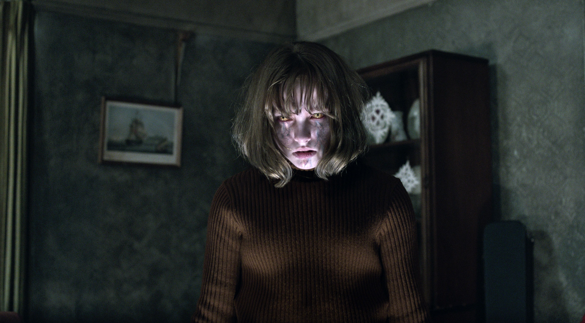

Curiosidades
Voltar

Curiosidades sobre as gravações dos filmes
- Invocação do mal 1 - O ator Patrick Wilson, que viveu Ed Warren no filme, disse que alguns atores mirins misteriosamente apareciam com machucados sem explicação no set...
- Invocação do mal 2 - Alguns alegaram que a verdadeira Janet Hodgson é uma ventríloqua talentosa ou tem capacidade de manipular vozes, e ela admitiu ter fingido alguns eventos e revelou que cerca de dois por cento da assombração que sofreu era falsa durante uma entrevista ao The Telegraph
- Invocação do mal 3 - A verdadeira Lorraine Warren colaborou para o filme
Lorraine Warren morreu em 2019, aos 92 anos.
Ela esteve presente na produção, sendo creditada como consultora-chefe desde o primeiro "Invocação do Mal", de 2013.
Seu marido e um dos protagonistas do filme, Ed Warren, faleceu em 2006, devido a um ataque do coração. Relatos afirmam que ele piorou muito depois de investigar os horrores em Amityville, um dos casos mais famosos do casal, que também virou filme